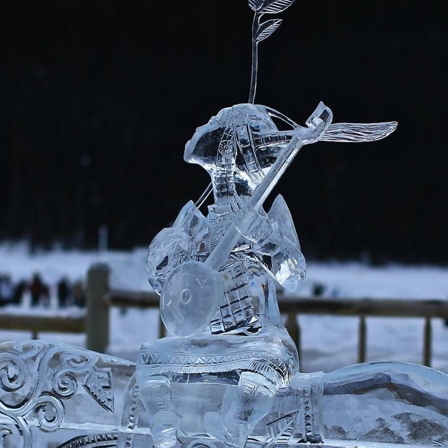
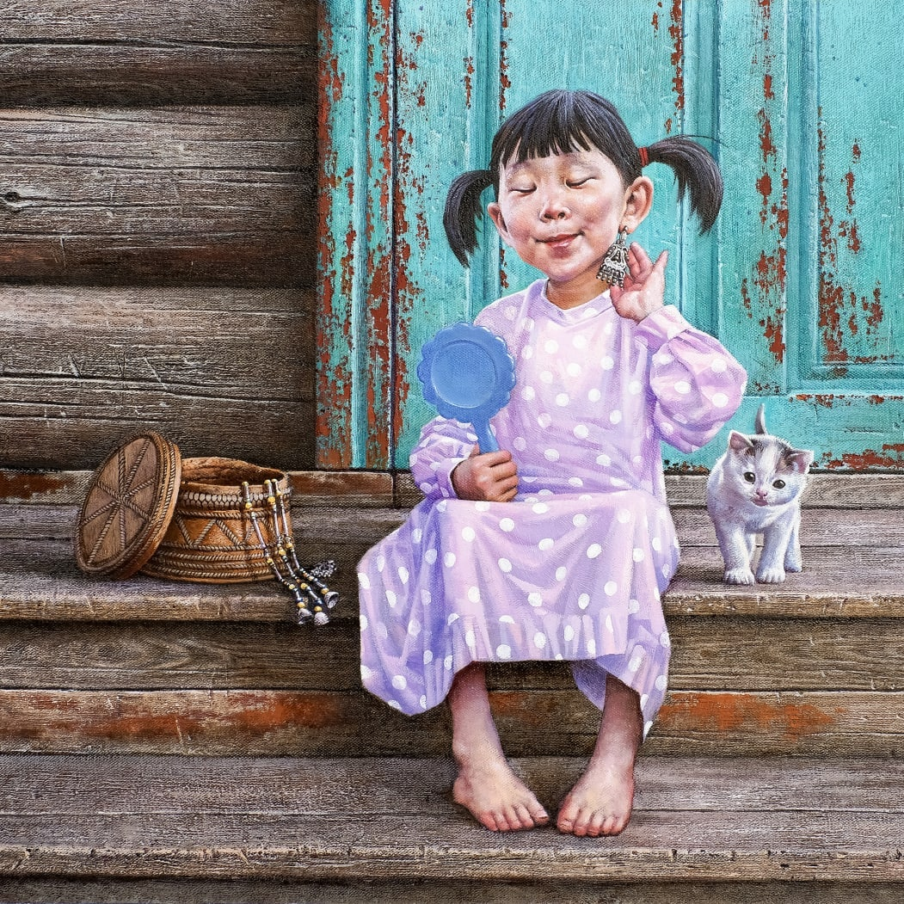
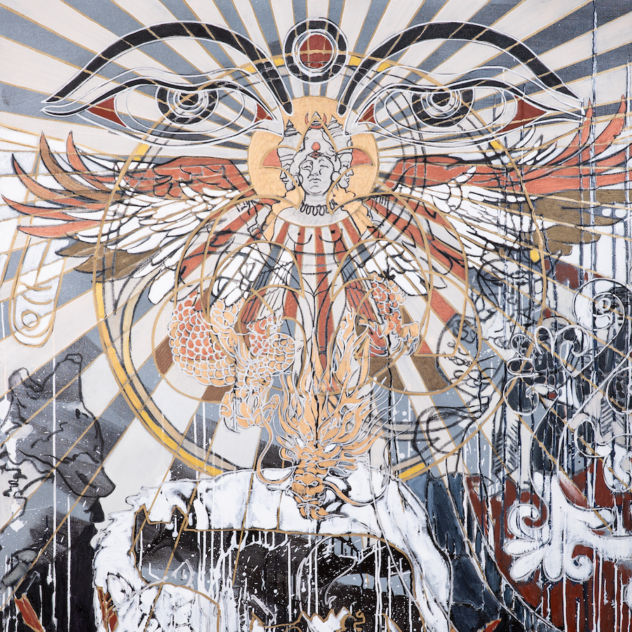
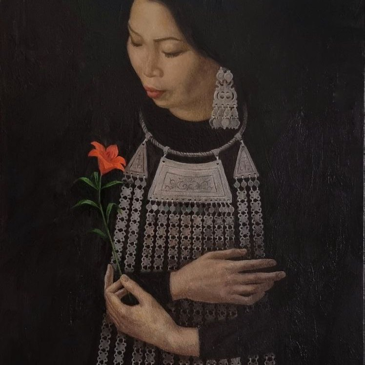
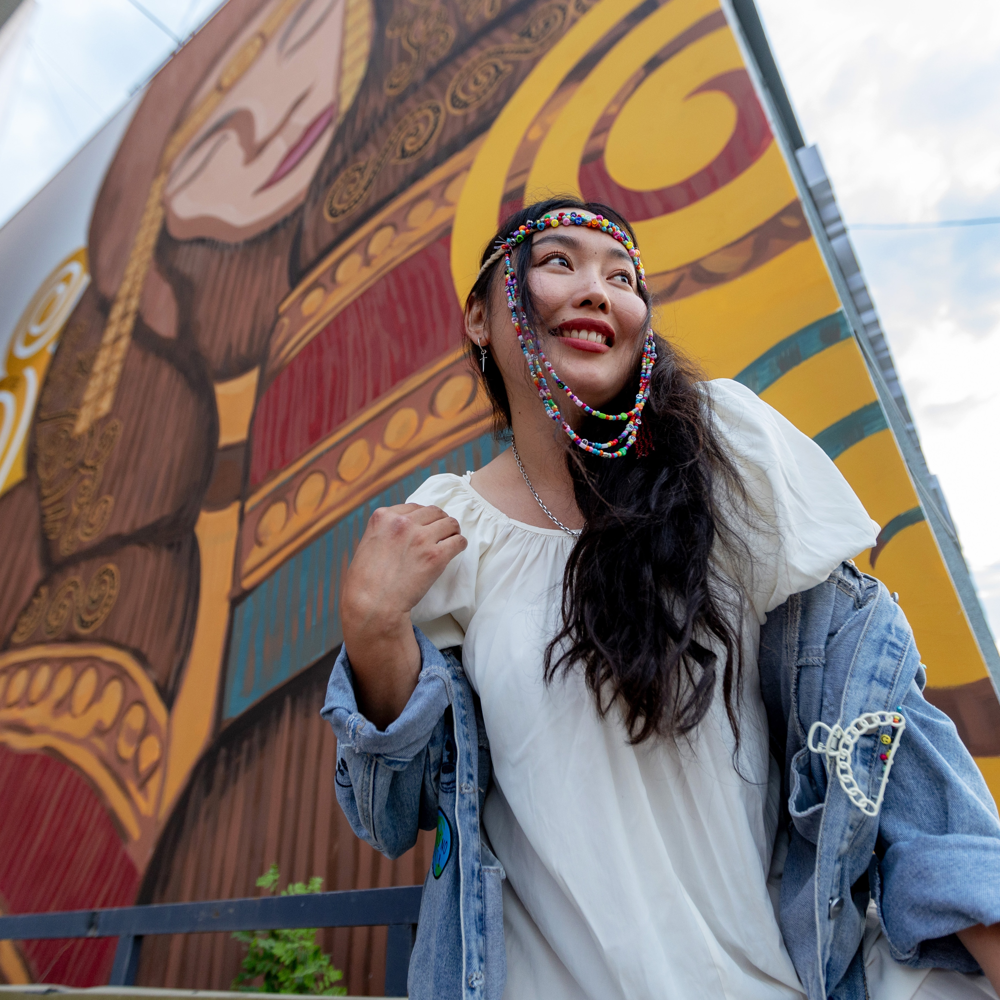
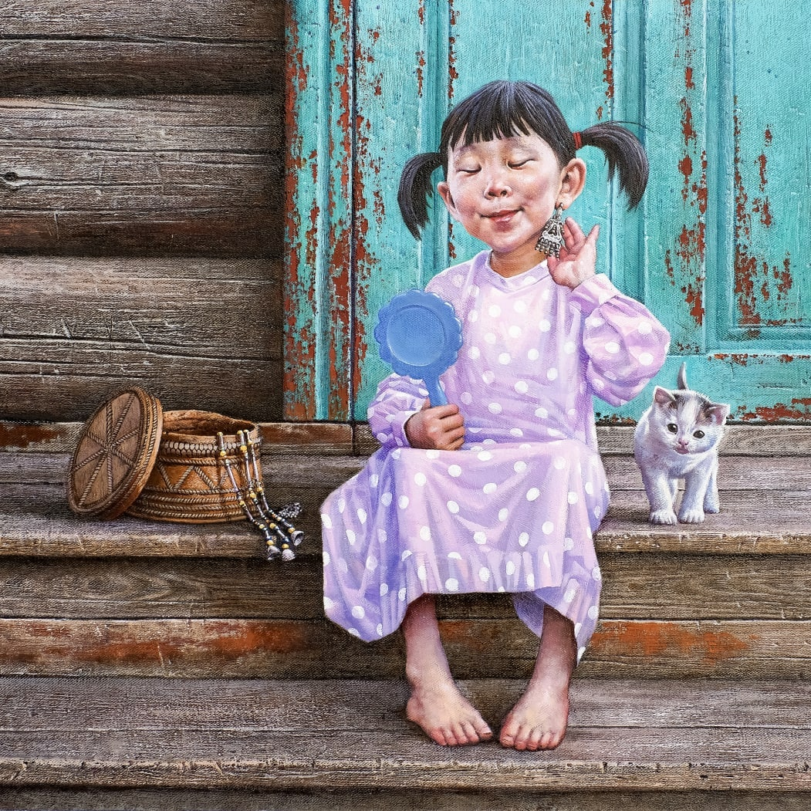
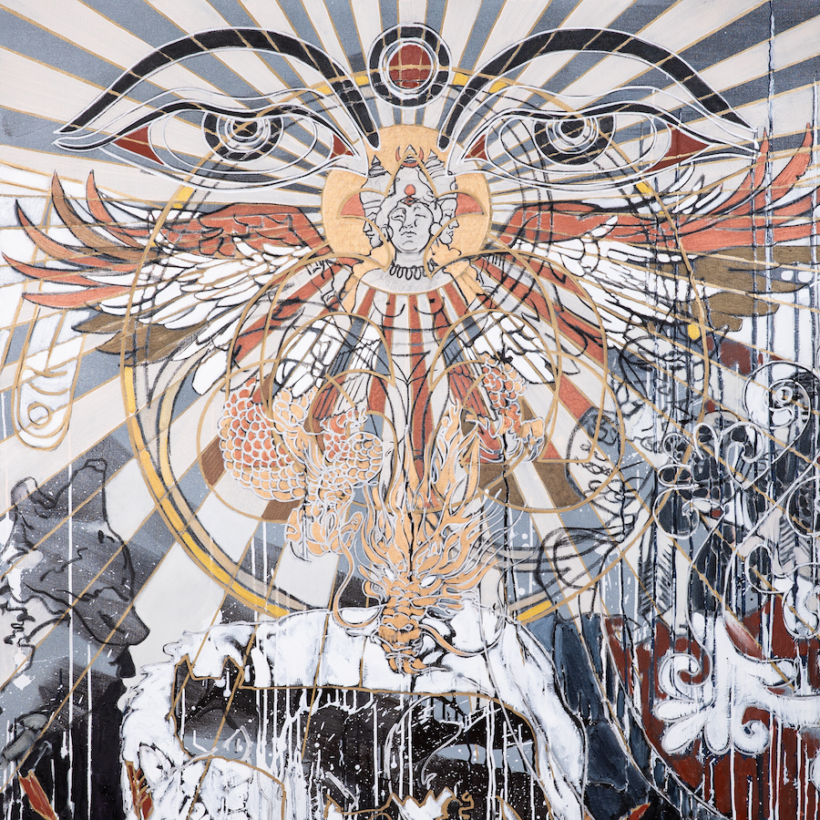
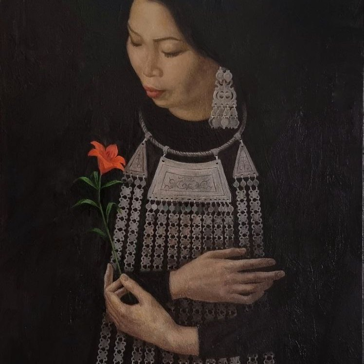
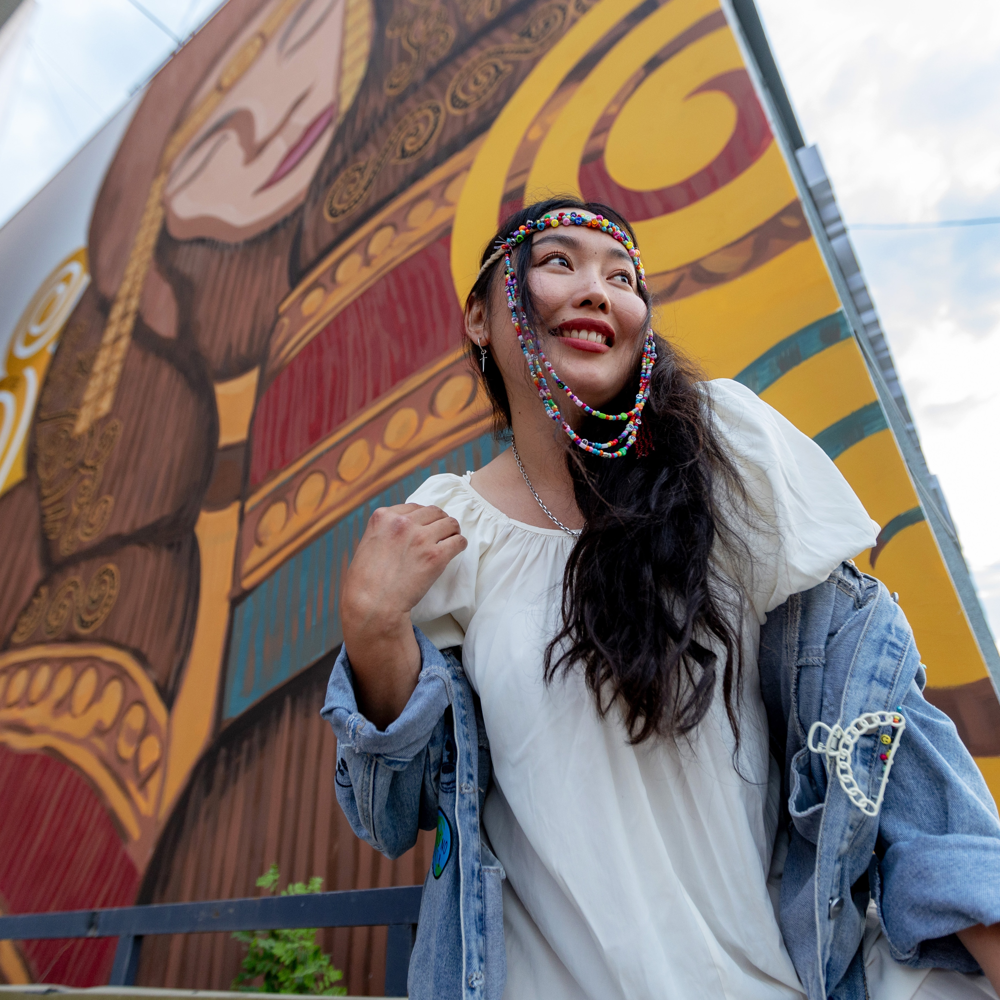
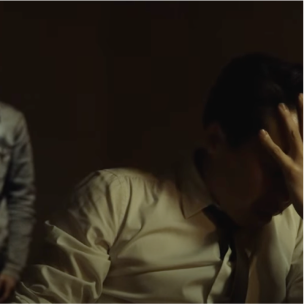

Virtual exhibition "Sakha aata － Sakha aattaakhtara" presents
artworks by independent Sakha artists. It is dedicated to the theme of naming and
its significance for the identity of the Sakha people (also known as Yakut), who have inhabited Siberia
since ancient times. In the Sakha language, their land is called Sakha Sire (Sakha
Land). Visitors to the website will be given a unique opportunity to
get acquainted with the original culture of the Sakha people through the works of
famous artists and group art projects. The problem of names and naming is closely
intertwined with the people's language and history, ethnic identification, and
territorial affiliation, about which you can read more in the scientific part of the To
Be - Named project.
The exhibition presents the diversity of contemporary art of the Sakha people:
photographs of the pristine nature of Yakutia; carvings on mammoth tusk, bone,
wood, and ice; jewelry artistry, sculpture of small forms; graphics, lithography,
painting; performances, theatre, and cinema. The place of meeting and dialogue
will be the virtual space provided by the project on the To Be - Named website.
This approach has ensured the transnational character of the event in cooperation
between science and art and has allowed the expression of creative freedom.
Our virtual exhibition presents a selection of unique works by Sakha artists,
inviting viewers to immerse themselves into the rich diversity of artistic vision of
the masters of their craft. All artworks are selected in accordance with the project's
concept of names and naming in the context of Sakha ethnic identity.
Photographs of the artworks were kindly provided from the personal archives of
the artists themselves.
We are very grateful to the artists for their support of the project, trust, and
cooperation!
Exhibition Curator – PhD Kyunney Takasaeva
(Künnei Takaahai in the Sakha language)
Coordinator of the Polish-Siberian research group
at the Faculty of "Artes Liberales" at the University of Warsaw
She is a native Sakha
More info
Для перевода на английский язык на сайт:
Виртуальная выставка "Sakha aata - Sakha aattaakhtara", что переводится как "Sakha names about Sakha names. Выставка представляет арт-работы 7 независимых художников и 2 арт-групп из Саха (Якутия) и посвящена теме именования и его значения для идентичности человека и народа.
Выставка представляет разнообразие современного искусства народа Саха: фотографии первозданной природы Якутии; резьба на бивне мамонта, кости, дереве и льду; ювелирное мастерство, скульптура малых форм; графика, литография, живопись; перформансы, театр и кино. Местом встречи и диалога будет виртуальное пространство, предоставленное проектом на веб-сайте "To Be - Named". Такой подход обеспечил транснациональный характер мероприятия в сотрудничестве науки с искусством и дал возможность на волеизъявление свободы творчества.
Посетителям веб-сайта проекта "To Be - Named" до конца августа 2024 года будет предоставлена уникальная возможность провести всё лето вместе с известными якутскими художниками и их арт работами, которые приглашают ознакомиться с самобытной культурой народа Саха.
Наша виртуальная выставка представляет подборку уникальных работ художников из Республики Саха, приглашая зрителей окунуться в богатое многообразие художественного видения мастеров своего дела. Все арт-работы подобраны в соответствии с концепцией проекта об именах и именовании.
Фотографии арт-работ любезно предоставлены из личных архивов самих художников.
Выражаем огромную благодарность художникам за поддержку проекта, доверие и сотрудничество!
Куратор выставки – PhD Kyunney Takasaeva
(Künnei Takaahai in the Sakha language)
Coordinator of the Polish-Siberian research group
at the Faculty of "Artes Liberales" at the University of Warsaw.
She is a native Sakha.
More info
08.10.1966 – 17.03.2022 Александром Кривошапкиным (Дерсу)
08.10.1966 – 17.03.2022  Egor Stepanov Егор Степанов
 Alexander Manzhuriev
АЛЕКСАНДРА МАНЖУРЬЕВА

Andrey Chikachev
Чикачёв Андрей Васильевич

Anna Osipova
Анна Осипова

Semen Lukansi
Семен Луканси

Kyydaana Ignateva
Кыдана Игнатьева
Alexander Manzhuriev
АЛЕКСАНДРА МАНЖУРЬЕВА

Andrey Chikachev
Чикачёв Андрей Васильевич

Anna Osipova
Анна Осипова

Semen Lukansi
Семен Луканси

Kyydaana Ignateva
Кыдана Игнатьева
 Nataaha
Натаха
Nataaha
Натаха
 Art Group "ARCHETYPE"
Art Group "ARCHETYPE"(13 artists) Художественная группа "Архетип"
(13 художников)  Creative Group "OYDUO"
(14 people) Творческая группа "ОЙДУО"
(14 человек)